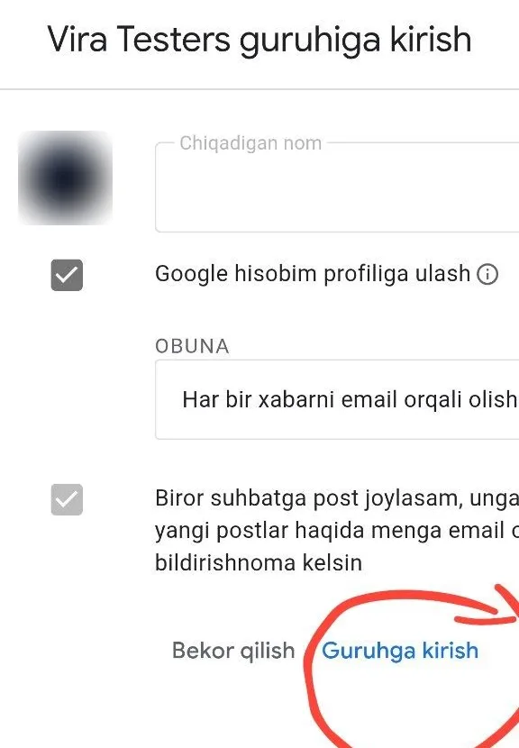

Vira'ni birinchilardan bo'lib sinab ko'ring!
Til o'rganish ilovasi sinov bosqichida. 3 ta qadam — 2 daqiqa.
Ro'yxatga qo'shiling
Pastdagi tugmani bosing. Ochilgan sahifada:

Tester bo'ling
Tugmani bosing. Ochilgan sahifada shu tugmani bosing, keyin ◀ orqaga qayting:
⏳ Google ro'yxatni yangilashiga biroz vaqt kerak. «Ilova topilmadi» desa — 10 daqiqa kutib, qayta bosing.
O'rnating
Tabriklaymiz, siz testersiz!
Vira'ni oching, ro'yxatdan o'ting va birinchi darsni boshlang.
🙏 Iltimos, 14 kun o'chirmang
Vira'ni hamma uchun chiqarishimiz uchun Google kamida 14 kunlik sinovni talab qiladi.
Har kuni bir-ikki daqiqa dars qilsangiz — bizga katta yordam bo'ladi. Rahmat!
🎁 Sinovchilarga sovg'a tangalar bor.
Savollar
«Guruhga kirish» tugmasi yo'q
Avval Google akkauntingizga kiring: sahifaning o'ng tepasida «Kirish» (Sign in) tugmasi bo'ladi. Sahifa Instagram yoki Telegram ichida ochilgan bo'lsa — ⋮ → «Chrome'da ochish».
«Ilova topilmadi» yoki «Mavjud emas» deyapti
1-qadamdan keyin 10–30 daqiqa kuting. Telefondagi Play Market aynan ro'yxatga qo'shilgan Gmail bilan ochilganini tekshiring.
iPhone'da ishlaydimi?
Hozircha faqat Android telefonlarda.
Pul to'lash kerakmi?
Yo'q, ilova bepul.